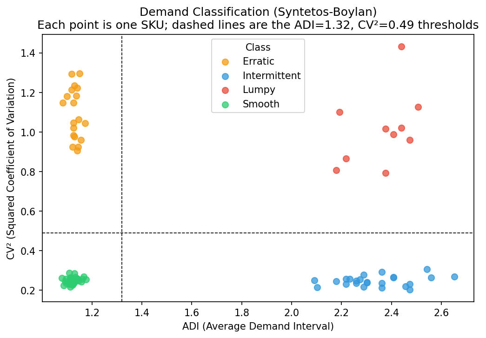
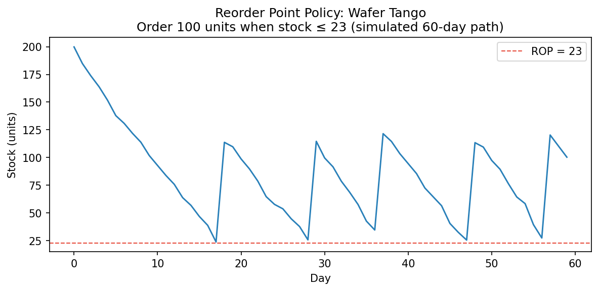
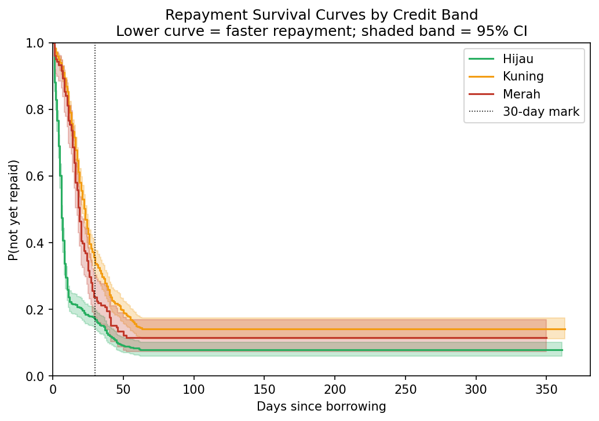
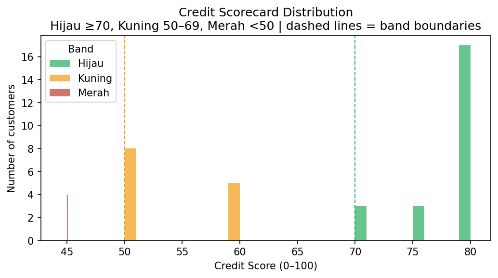

What this is
A warung owner has three recurring decisions: what dry goods to reorder, how much fresh produce to buy today, and which customers to extend store credit (kasbon) to. All three require demand forecasting, inventory policy, and credit risk assessment. None of which a solo operator has time to compute manually.
WarungOS delivers all three answers as a morning Telegram message, computed overnight by a nightly job that runs on GitHub Actions. The owner interacts with the system by typing plain text messages; the bot parses them, writes to Supabase, and replies in Bahasa Indonesia.
The system runs on zero marginal cost: Telegram Bot API (free), Supabase (free tier), GitHub Actions (free tier), Hugging Face Spaces (free CPU).
Stack
Runtime
FastAPI Uvicorn Telegram Bot API Supabase Postgres Hugging Face Spaces GitHub Actions
Analytics
pandas numpy scipy statsmodels lifelines rapidfuzz matplotlib
Quality
ruff black pytest GitHub Actions CI
What was built, milestone by milestone
Scaffold
Folder structure, SQL migrations, CI lint workflow, Dockerfile, secrets management.
Synthetic data + model validation
86 SKUs, 40 customers, 12 months. Demand classifier, forecasting, and reorder point models validated offline.
Telegram webhook (MVP)
FastAPI bot on Hugging Face. Parses sale and stock messages in Bahasa Indonesia. Fuzzy SKU matching.
Inventory policy live
Nightly recompute: Syntetos-Boylan classifier → ROP (dry) + newsvendor (perishables). Morning digest delivered over Telegram.
Kasbon credit system
Behavioral scorecard, 5 dimensions scored 0 to 100. Credit bands drive kasbon limit suggestions and morning reminders.
Survival model + portfolio
Cox proportional hazards model predicts P(repaid within 30 days) per open debt. KM fallback for cold start.
Model outputs




Validation results
All figures below come from the synthetic validation dataset: 86 SKUs, 40 customers, and 12 months of activity from a seeded generator. The same code runs unchanged on live merchant data; live numbers will replace these once enough history accumulates.
The demand classifier split the 86 SKUs into 33 smooth, 24 intermittent, 19 erratic, and 10 lumpy. Each class routes to a different forecasting method, which is the point: a single method applied to all SKUs would misforecast more than half the catalog.
The kasbon ledger contains 1,421 debts over the 12 month window, of which 1,214 closed. Hijau customers repaid 91% of their debts within 30 days, with a median time to repayment of 6 days (620 closed debts). Kuning customers took a median of 19 days (443 closed debts). The Merah band holds only 4 customers in this dataset, too few to report separately.
Credit scorecard dimensions
| Dimension | Weight | Logic |
|---|---|---|
| Share of debts repaid on time | 30 pts | Fraction of debts repaid within 14 days |
| Average days late | 20 pts | Inverted: zero late days = full score |
| Tenure with shop | 20 pts | Capped at 24 months for full score |
| Credit utilization | 20 pts | Fraction of suggested limit currently in use |
| Borrow frequency | 10 pts | Regular small borrows score better than rare large ones |
Bands: Hijau ≥70 Kuning 50 to 69 Merah <50
Cox repayment model
The nightly job fits a Cox proportional hazards model on the full history of closed debts.
For each open debt, it predicts P(repaid within 30 days) and writes it
to repayment_predictions.
Covariates: log(amount), tenure_months,
days_since_payday (distance to nearest 1st or 15th of the month, capturing
the Indonesian payday cycle).
When fewer than 20 closed debts exist (cold start), the model falls back to Kaplan-Meier band averages. The morning digest flags open debts with p30 ≤ 30% so the owner can prioritize collection calls.